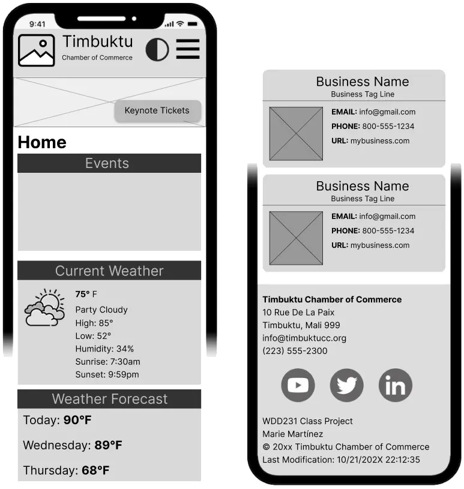

Site Name
Owerri Chamber of Commerce.
This name represents the website of the Owerri Chamber of Commerce.
Optional domain availability: chamber-owerri.org
Site Purpose
The site provides a resource for people who want to relocate to the Owerri area or want to know more about businesses in Owerri, and also a connecting asset for mebers of the chamber of commerce catering to their welfare.
Target Market
The site is for business proprietors and people leaving in Owerri and surroundings..
Site Goals
The site intents to increase interactivity and inter business communication as well as provide a front to help local businesses get more from government.
User Personas
Small Business Owner: Peter is a 25-year-old entrepreneur who owns a small money point shop in town and is looking for networking opportunities to grow his business. Hotel Managers: Chike is a 50-year-old hotel manager is seeking for smaller companies to have a joint venture of mutual benefits in harnessing opportunities in the area.
Scenarios
- A business man is looking for information about businesses around the area to find out business to target for his B2B product.
- Business around are seeking to come together to influence government policy to make their operations smoother in the area.
SEO Plan
Use relevant keywordsin site contents.
Submit site to google crawl / search engine.
Add backlinks to website to improve ranking
Design Brief
Primary Color #2c3e50
Secondary Color#ffffff
Background Color: #f2f2f2
Text Color #333333
Font Family Roboto, sans-serif
Color Schema
Typography
Roboto, sans-serif - Used for body text and general content.
Georgia, serif - Used for headings and special sections.
Site Map

Wireframes
Mobile View
Desktop View